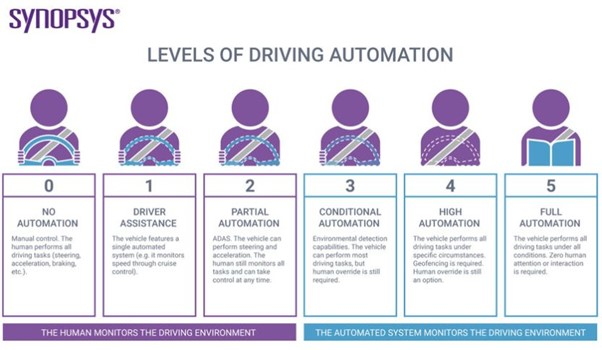

Cyber Security broadly covers the protection of electronic data and other assets from malicious actors, such as:
Cyber security typically also covers a company’s obligations around keeping credit card data safe (under the Payment Card Industry Data Security Standards (PCI-DSS)) and privacy law requirements to keep Personally Identifiable Information secure.
Attacks against computer systems directly vary in complexity, ranging from simple attacks based on known vulnerabilities that rely on systems not being up to date with security patches, to rare and unknown “zero-day” attacks that are typically reserved for targeted, generally state-sponsored attacks against specific individuals or companies. The latter attacks may also involve chaining multiple attacks together to reach the final attack destination, and are very expensive due to the effort required to discover them and the anticipated short lifespan once used in the wild where, if observed, the vulnerabilities they exploit can be fixed.
A successful attack of either form opens the door to the ability to execute a payload, which performs the desired actions. Such actions may include:
The other, arguably more common today, attack vector is against people, exploiting our trusting nature or naivety to expose passwords, data or remote access to external malicious actors. Such attacks are called Social Engineering attacks and, like attacks directed at computer systems, range in complexity. Simple attacks may be in the form of a spam phishing email attempting to get the user to click a link that will either run some malicious software or trick the user into disclosing their username and password. Complex attacks may involve a malicious actor researching their target’s background or activities for the purposes of making any phishing email appear more legitimate through the inclusion of personalised information.
Cyber security activities are generally categorised into proactive and reactive measures, with typical activities being:
What is the state of the art of this new technology?
Detecting and monitoring for attacks is key to understanding and limiting the impact of any breaches. As more traffic is being encrypted directly between applications and servers, the ability for potential attacks to be identified becomes harder as security infrastructure has a harder time being able to see the conversation between source and destination.
Developments into network behaviour analysis means that attacks can now be identified from the behaviour of traffic on the network, without the requirement to decrypt the traffic to inspect it.
What can be done now?
Below are a few things that one could do using this. allows us to secure our network or system, which has to work with critical or sensitive organizational data.
Data protection –The primary role of Cybersecurity is to protect the confidential data that is supposed to be accessed by the authorized user only.
Enforcing CIA – The three features of Cybersecurity: Confidentiality, Integrity, and Availability, could be enforced by the mean of internet security.
Mitigate breach risk –The very secure and updated system is very less biased towards security breaches. It helps the users to protect their data from getting exposed to any of malicious user or attacker.
Ensures business continuity –It offers some plan that ensures sustainable business processes, which could keep the organization’s reputation and ensure that business should continue without any obstacle.
What is likely to be able to do be done soon, say in next 3 years?
Artificial Intelligence (AI) is no longer and not just being used by robots to carry out household tasks and mundane tasks for us, like mowing the grass or vacuuming the floor. (Goddard, 2021) Artificial intelligences are being increasingly and undoubtedly used by both cyber criminals and cybersecurity teams. In the future of cybersecurity Artificial Intelligence will one day play a very big part in cyber security.(Goddard, 2021) The number and variety of cyber threats will continue to increase year-on-year. Here are some examples are: - Organised gangs, untrusted internet, State sponsored attacks, phishing attacks. With the implementation of strong defences against cyber-attack, this will require access to a skilled, experienced cybersecurity workforce. This will increasingly become a challenge. The demand for staff with well-developed cybersecurity skills is growing much faster than the supply. (Goddard, 2021) Research conducted in 2020 highlighted that the number of unfilled cybersecurity vacancies could increase from 1 million in 2014 to 3.5 million in 2021. Unless there are enough people with the skills to counter the growing number of cyber threats, the harm to everybody will increase.(Goddard, 2021).
What technological or other developments make this possible?
Machine learning and Artificial Intelligence advances are expected to enable more advanced detection and prevention tools for companies to use in the coming years. As these fields advance, cyber security capability and automation for detection and prevention will improve.
What is the likely Impact?
Peoples lives and the easy access to data from the criminals is likely to impact everyone that has some sort of technology present within their home or mobile. Due in part to the lack of effective IT security adoption by the thousands of device manufacturers and service providers, hackers are now adept at hacking into these devices, which then gives them easy access to the connected private networks. (Goddard, 2021). For example, a criminal could detect that everybody in the household had gone out in the car, leaving the home empty and vulnerable to a burglary attack. (Goddard, 2021) Attackers will also be able to target the vehicles themselves, potentially using them to access email accounts and personal information or the cloud services where the data is routinely sent for storage and analysis. (Goddard, 2021)
What is the potential impact of this development?
The potential impact will be catastrophic to people who don’t have excellent cyber security. Their data and security could potentially be sold to cyber hackers and criminals to feed their ongoing cyber habits.
What is likely to change?
Cyber criminals are likely to get smarter as technology does. Things that the average Joe hasn’t even dared to dream of yet.
The way we use technology is likely to change. Which people will be most affected and how?
Everyone will be affected as long as there is data and lack of cyber security, the criminals and hackers will still be able to keep their crimes going.
Will this create, replace or make redundant any current jobs or technologies?
If anything, I think that this will create current jobs as technology gets smarter and data and the internet are still evolving.
How will this affect you?
This will affect me in my everyday life as I use technology for work and at home daily. As a user of technology, I will have to be up to date with the increasing possibility of cyber-attacks and the use of home and cyber security within my social and local environment.
What will be different for you?
With the knowledge of cyber security and home security. How all the new technologies all link together. I will have to be tech savvy and know about how cyber criminals will use my data and my devices to hack and steal personal data and information from now on and into the future. This will affect my family members on a personal level. Especially the younger generation as technologies are only advancing and growing daily. Cyber criminals are becoming smarter by working smarter not harder. I will have to make my family and friends aware of the technologies and the way criminals are misusing personal data in cyber-attacks.
Referencing
Goddard, W., 2021. IT Chronicles. [Online]
Available at:
itchronicles
[Accessed 29th December 2021].
Merriam-Webster Dictionary (MW). (2020). Cybersecurity.
Retrieved from:
Merriam-Webster
NCCIC and ICS-CERT. NCCIC/ICS-CERT 2015 year in review; Apr 19, 2016.
Available at: ics-cert
Cloud, Services and Servers
What does it do?
Cloud computing is the delivery of services and applications to end users using someone else’s (the cloud provider’s) computers. Originally intended to provide businesses with a way to outsource their server hardware that traditionally needed to be purchased and maintained, cloud services have expanded over the years from virtual machine-based hardware alternatives to a range of services that help reduce more of the effort required from customer IT departments in keeping the business IT infrastructure running. Cloud services are typically provided as operational expenditure “as-a-Service” offerings, with three traditional core categories. (Accenture, 2021)
1. Infrastructure-as-a-service (IaaS)
One of the first cloud services to be offered, IaaS services provide customers with the capability to run their workloads in the cloud on virtual machines as an alternative to hardware on the customer’s premises. Services offered that are considered Infrastructure-as-a-Service include virtual machines, “bare metal” servers and data storage. The cloud provider is responsible for providing and maintaining the server and network hardware, environments and security that the provided services run on, while the customer is responsible for maintaining the software environments within the virtual machines or bare metal servers, comprising of the operating system (such as Windows or Linux) and the applications running within it. Customers may select IaaS cloud services where there is a desire to outsource the provisioning of hardware that would normally need to be purchased and installed on-premises and/or to convert the large capital expenditure of a hardware refresh or purchase into an operational expense in the form of an ongoing service fee. The reduction in support costs as the cloud provider becomes responsible for the maintenance and refresh of the hardware is also a common consideration. Examples of IaaS cloud providers are Amazon Web Services (AWS), Microsoft Azure, and Google Cloud.
2. Software-as-a-service (SaaS)
3. Platform-as-a-service (PaaS)
Platform-as-a-Service is a middle ground between IaaS and SaaS, and provides specific subsystems to customers that need to run applications themselves (because their application isn’t available in SaaS form) but would like to outsource as much as possible. Examples of PaaS offerings include data warehouses, where the cloud provider provides the server and storage hardware and manages the database software upgrading and patching while the customer manages the database structure and data, and enterprise integration platforms (used for translating Application Programming Interface (API) calls between different systems) where the cloud provider provides the server hardware and associated environments and the customer is responsible for development of the API translation modules specific to each software system. Examples include Microsoft Azure SQL Database and Microsoft Azure Integration Services.
What is likely to be done soon (say the next 3 years)?
The demand for cloud services (a viable option for remote work) is ever increasing since the pandemic's existence has allowed business growth and explosive development of SaaS providers and services. Users will continue to rely heavily on cloud services into the future (including streaming services and developing cloud dependant services) . According to Gartner, SaaS will continue to be the leading cloud segment of the market by revenue in 2021 , expanding to $117.7 billion by the end of the year. (Chowdry, M, 2021) “Cloud is no longer a future aspiration, it’s an urgent mandate. Cloud is not only essential to successful digital transformation, but the global disruption wrought by the COVID-19 pandemic has reemphasized the fundamental value of systems resilience, agility, adaptability and scalability.” (Accenture, 2021) Within the next three years I expect that businesses may shift to implementing hybrid and multi cloud strategies following 87 per cent of business in 2021. Business will continue to do this preventing them being dependant on a single provider, which will becoming increasingly easier as more providers emerge soon to meet and facilitate the rising demand. Chowdhury, 2021)
What is the likely impact?
An increase in the availability of Cloud services, infrastructure and software will allow for faster, more efficient and resilient IT systems for both business and personal users. This innovation will rely on enterprise realising the significant cost savings in development of new architecture and infrastructure provisions (Iaas), Platform Services (PaaS) and Software (SaaS). For end users this will mean they can leverage the benefits of Clous-native innovations immediately. (Accenture, 2001) There is also evidence that there will be significant financial growth in Enterprise clous investments in both public and private sectors as investments have climbed 34.4 per cent ove r the last year (IDC 2021) while non cloud spending fell by 8% (Chowdhury, 2021). This indicates that the interest and the need for expansion and investment into these resources are both of interest and financial benefit dictating their continued growth.
Will this create, replace, or make redundant any current jobs or technologies? As cloud systems are integrated into business and enterprise there is a significant potential that there will be a reduction in the number of IT support staff required to be retained by companies as there will be less hardware installed on premises that needs to manage and maintained by inhouse IT systems management. With the increasing development and management of Cloud services will dictate the areas of IT that would require IT professionals to specialise. With a higher redundancy of IT support staff, it would indicate that special interest in growth areas such as cloud development would be recommended.
Although there will be a reduction in jobs available for those in IT support there will however be a need for training and equipping enough talented support for clients using the digital cloud environments. (Chowdhury, 2021)
How will this affect you?
With an Apple based environment at home we rely on iCloud to securely store photos, files, passwords, and data so that there is a seamless and up-to-date access automatically on all devices. It also makes transition between devices seamless when editing and writing documents. A simple copy on one device is available for paste immediately on another. It means far improved productivity in the home/work environment. (Apple, 2021) Cloud services (such as the iCloud that is available to me through our apple ecosystem) are already readily available to the home user in ways that are continually being modified to be more user-friendly and accessible. Leading platforms of Cloud environments including Amazon Web Services (AWS) Microsoft Azure and Google Cloud will continue to dominate the market for both professional and home users. Ultimately this means that those not in the IT industry (such as friends and family) will not need to purchase and maintain expensive hardware at home, rather accessing the services they need for storage and data protection over Cloud. The availability and increasing convenience and quality of Cloud environments will mean that working from home will continue to develop into a more productive space than ever before. Since the pandemic it has become Increasingly evident that a productive cloud environment is critical to sustain and grow business and enterprise, a fact that will be a factor in my work life as I enter the IT industry.
Referencing
Accenture, 2021, Blue-Sky thinking: How cloud growth can accelerate growth [viewed 29 December 2021]
Available at:
Cloud Growth
Apple, 2021, Introduction to iCloud-Apple support. [viewed 29 December 2021]
Retrieved from:
Apple/iCloud
Chowedhury, M 2021, The future of cloud computing: Cloud Nationalism in 2022 [viewed 30 December 2021]
Available at:
Cloud Nationalism
Machine Learning
What does it do?
Machine learning is a branch of artificial intelligence that analyses data, recognises patterns, and makes predictions based on the data it has been given. Through machine learning algorithms we can learn things about the world from massive samples of data that we as humans would never be able to appreciate. By teaching a computer to learn patterns from examples in test data sets and then providing a new set of data the computer can then recognise those same patterns and make real predictions. We can teach or program systems to have the ability to learn and improve without being told exactly what to do every step of the way. Machine learning studies the laws that govern all learning processes.
What is the state of the art of this new technology?
In October 2015, a computer program called AlphaGo was the first computer to beat a human professional Go player without a handicap on a full-sized 19x19 board. This was a milestone in artificial intelligence and machine learning because Go is considered to be the most complex game created by humans. “So Go is probably the most complex game ever devised by man. It has 10^170 possible board configurations, which is more than the numbers of atoms in the universe,” said study author and AlphaGo co-developer Demis Hassabis of Google DeepMind. Another example is image classification, giving a computer the ability to learn the difference between images like classifying if an image is a dog or a cat for example. Google’s ML Practicum is used in Google image search, we no longer need to tag our images with cat or dog, the machine learning algorithm will be able to tell the difference without a human specifically labelling it themselves. This cuts down on the previously manual task of labelling every image we upload and allows us to search for more specific descriptions that the uploader may not have thought to tag the image as.
What is likely to be done soon (say in the next 3 years)?
It is hard to say for certain what advancements will take place in the next 3 years but some industries that are currently implementing machine learning include healthcare and pharma, manufacturing, and autonomous vehicles. With access to health records machine learning algorithms could predict disease based off a wider range of variables than the traditional age, height, weight, and gender, etc. By providing a data set containing a drug compound’s chemical structure, machine learning algorithms can predict side effects the drug could have on different genetic structures. Fully automated self-driving cars powered by AI are a very close reality as well as other automated types of transport like trucks and ships for logistics.
What technological or other developments make this possible?
One current limit of machine learning is computer processing power, the development of quantum computing allows computers to process more data faster. In 2019 Google’s Sycamore quantum computer was able to perform a task in 200 seconds that would otherwise take our current best supercomputer 10,00 years to complete. AI hardware like AI chips designed to be optimized for performing AI specific tasks, as AI applications become more popular any reduction in cost and improvements in performance will be beneficial to the development of AI applications. Besides quantum computing, general processing power usually in the form of GPUs (graphical user interfaces) is being made smaller and more powerful. NVIDIA manufactures super computers specifically designed for data science and artificial intelligence. For example, the DGX Station A100 provides computational power previously limited to data centres that can be powered by a normal home outlet, albeit pricey. An example of a us e of the DGX Station A100 is AI video game development, based on NVIDIA’s GameGAN research, a YouTube channel sentdex was able to reproduce a playable version of Grand Theft Auto IV by training a machine learning algorithm on hours of gameplay visuals paired with player input.
What is the likely impact?
Machine Learning is likely to impact our lives in almost every aspect including healthcare, aged care, transportation, entertainment, manufacturing, logistics and even financial markets. Any industry that deals with enormous amounts of data can benefit from machine learning. As individuals we can expect to see massive changes in the workplace like more automation , particularly automating dangerous jobs. We currently are already experiencing machine learning algorithms telling us what to watch on Netflix or what video to play next on TikTok and this is only expected to improve. Certain complex ecological issues that require massive amounts of data collection and analysis could be solved completely.
Will this create, replace, or make redundant any current jobs or technologies?
A study by McKinsey & Co found that 30 percent of the activities in 60 percent of all occupations could be automated. This means working alongside rapidly evolving robotics is something we should expect to see. This could be seen as beneficial in examples such as bomb disposal, this highly risky job is currently performed by drones being controlled by humans, but with advancements in machine learning these drones could be automated and perform better than humans, creating less errors and saving more lives in the process. Loss of jobs is one of societies biggest contentions with AI, even people with no IT background or education are aware of this threat and show concern. Limitations on AI and machine learning are extremely necessary to ensure these technological advancements are made ethically and ultimately benefit more than disadvantage humans and society.
In your daily life, how will this affect you?
Autonomous vehicles, robotics becoming more common in the workplace, improved healthcare and disease prediction are machine learning technologies that will improve mine and everybody else’s life. These are technologies that we will also be very aware of. There is likely to be a machine learning advancement that most people will not notice like improvements in advertising and social media. Companies like YouTube, Netflix, and Facebook all use machine learning to keep users on their site for longer, this kind of background use of machine learning might even have a greater affect then the stuff that is more apparent. Some concerns include privacy, facial recognition implemented by law enforcement is not always good thing, particularly in countries with tyrannical governments. Russian facial recognition technology company FindFace has been adopted by Russian law enforcement and is being used with their network of 150,000 security cameras in Moscow. (Dickson, 2016)
Autonomous Vehicles
What does it do?
Autonomous vehicles can be described in simple terms as vehicles with the capability of driving and managing its way from route A to route B and beyond with little to no human involvement. AVs are cars with motion and action capabilities that do not require any sort of conductor or teleoperation control (Frazzoli, Dahieh and Feron 2002). AVs rely on artificial intelligence and machine learning systems to operate around their environment and react to commands. Complex sensors and actuators, together with advanced computer vision functions are used to create a constantly updated map of their surroundings, detect the presence of nearby vehicles and pedestrians, measure distances and detect uneven surfaces in roads and sidewalks (Techopedia 2022). The most used programming languages used for AVs are C++ and Python. C++ is a desirable language because it allows the developer to program at a low level to ensure that the program will operate at a high efficiency. This is key for programs that need to operate fast and repeatable. Python is also a must and is one of the most popular programming languages. It is also popular for AV programming as it provides numerous libraries such as math, science, data visualisation, machine learning, AI, and deep learning, all essential to programming an efficient autonomous vehicle. The Society of Automotive Engineers defines 6 levels of driving automation which range from level 0 or fully manual to level 5 e.g., fully autonomous (Society of Autonomous Engineers 2021).

What can be done now?
Currently, the world is experiencing level 2 vehicles. These are most common and are used by individuals for their everyday commute. Regulations vary from country to country and state to state but most can operate the AV at a level 2 system, even if it has the capabilities of performing at a higher level.
What is likely to be done soon?
Autonomous vehicles are fast changing our transport and logistics world. The level 2 AV is fast popularising the use of AV’s and within the next 3 years it is likely that level 3 AV’s will hit the car market in countries such as the US. The level 3 system is being used in Europe successfully. As the Biden infrastructure plan unfolds, which includes $7.5 billion in EV charging stations, the use of AV’s will increase and push more governing bodies to pass the required laws needed for the use of level 3 autonomous vehicles.
What is the likely impact?
Car manufactures across the globe are spending billions on R&D in autonomous vehicle development. General Motors has declared an all-electric future, promising to make EV’s fit for everyone’s price point (General Motors, 2022). This action is followed by numerous car makers worldwide. With the global car market heading towards EV’s, and governments fulfilling EV infrastructure, it is only a matter of time before EV’s with their autonomous systems became the leading type of vehicle on all roads worldwide. Predictions vary, but most assume at least a mixed fleet of human-operated and Level 4 or 5 AV’s – where the vehicle performs all driving functions under specific or all conditions by 2050 or sooner (Bertoncello and Wee 2015).
As with any technological change comes a need for adaption. Oil production would decrease, and the UAE, a major oil producer is planning for a future of no oil, investing rather in green energy projects domestically and internationally (Silverstein 2020) . Many service stations would cease to exist, and the mechanic may be hard to find. Although these changes would put people out of work, the world has experienced such changes in its history and has always adapted. One example would be how the industrial revolution changed the agricultural industry for good. In 1900, 40% of people in the US worked on farms. That figure is only 1 percent today (Dimitri, Effland and Conklin 2005). The industrial revolution changed agriculture and people’s way of income, but generation after generation lived a better live and GDP continued to grow.
How will this affect you?
I am a firm believer in the evolution of technology and societies. I feel it is important for governments to pass laws and regulations to allow technological advancements to thrive and I fell it is equally important to educate the generations of now and the future, to help them thrive, adapt, and expand their knowledge of technology. I believe we are experiencing a similarity as we did with the agriculture industry. There is no doubt that careers will be disrupted, and industries changed forever, but the technological revolution will continue to evolve and so will the future generations. The evolution of autonomous vehicles will most definitely enhance my way of life. AVs are certain to reduce the amount of traffic accidents, vehicle congestion, and has the potential to give me back more of my time rather than spending it commuting (Singleton 2019).